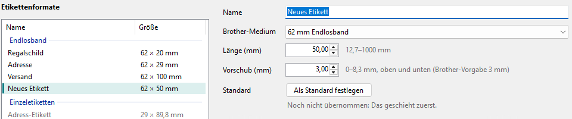
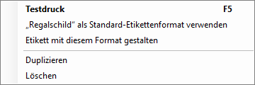
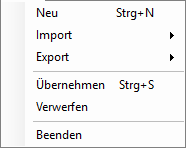

Etikettenformate anlegen und ordnen
Ein Etikettenformat ist ein Name für eine Rolle und, bei Endlosband, eine Länge. Die Liste gilt für alle QL-Drucker dieses PCs.
-
Neues Format
Klicken Sie auf Neu. In der Liste erscheint „Neues Etikett“ auf 62 mm Endlosband mit 50 mm Länge, und rechts steht der Cursor im Feld Name.

-
Einstellen
- Name
- so heißt das Papierformat später in den Programmen.
- Brother-Medium
- die Rolle: ein Endlosband, Einzeletiketten oder runde Etiketten.
- Länge (mm)
- bei Endlosband; daneben steht, was der Drucker kann. Bei Einzeletiketten und runden Etiketten legt das Etikett sie fest.
- Vorschub (mm)
- der unbedruckte Rand am Anfang und Ende jedes Etiketts auf Endlosband, 0 bis 8,3 mm (Brother-Vorgabe 3 mm).
Die Vorschau darunter zeigt das Etikett mit seinen Maßen. Was Sie ändern, gilt erst nach Übernehmen.
-
Duplizieren, löschen, ordnen
Ein Rechtsklick auf ein Format bietet Testdruck, das Format als Standard, Etikett mit diesem Format gestalten (öffnet den QL Label Maker), Duplizieren und Löschen.

Die Reihenfolge ändern Sie, indem Sie ein Format in der Liste an eine andere Stelle ziehen, oder mit Bearbeiten > Nach oben und Nach unten.
-
Importieren und exportieren
Im Menü Datei:

- Import
- Brother-Etikettenformate (.dat, .org)... liest die Liste aus Brothers eigenem Etikettenformat-Programm, JSON... eine exportierte Liste. Brother-Werksliste stellt Brothers ab Werk mitgelieferte Formate her; in Versionen ohne diese Liste ist der Eintrag grau. Danach fragt das Programm: Liste ersetzen oder Hinzufügen.
- Export
- als Brother-Datei (.dat) für Brothers Programm oder als JSON, zum Beispiel für einen anderen PC.